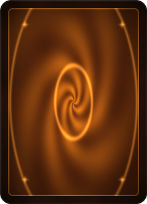
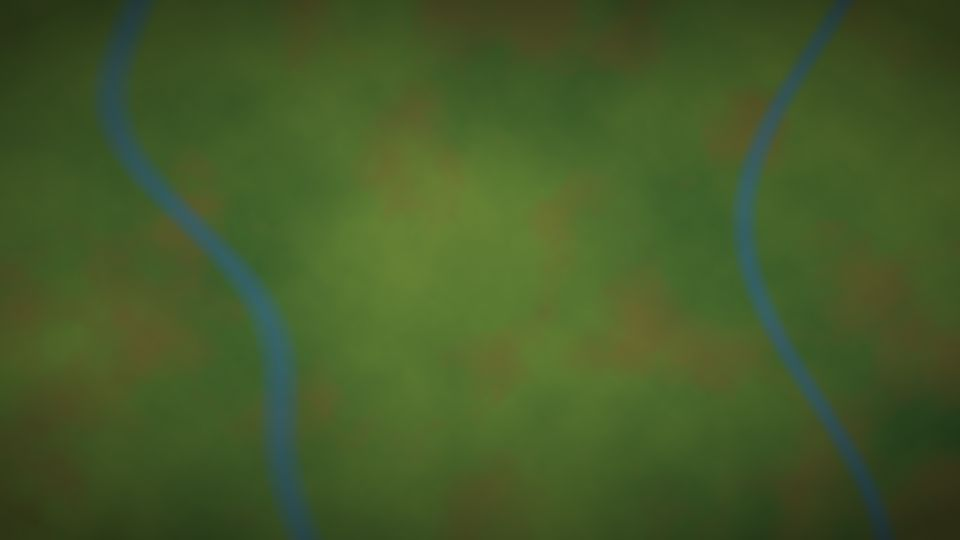
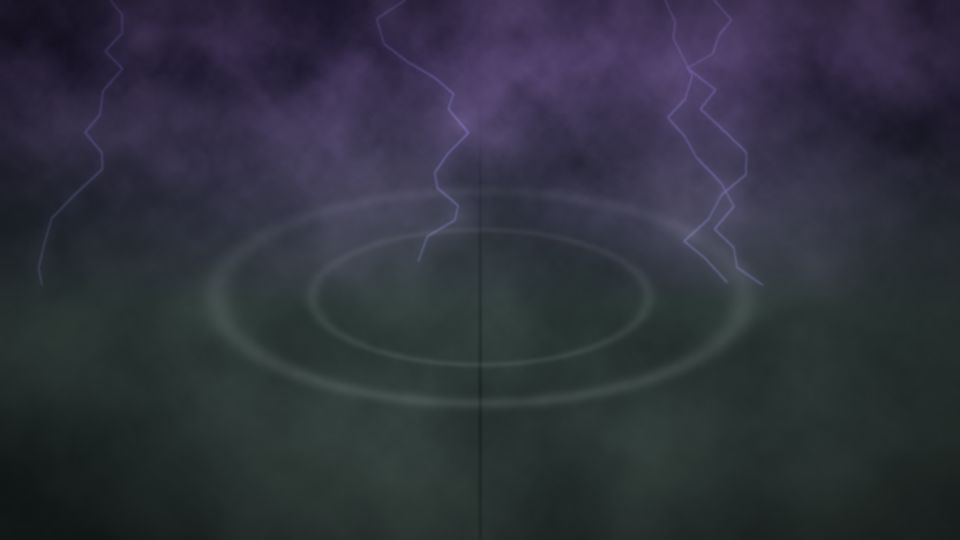

Full rules
The Forge rules engine runs every game: priority, the stack, combat, triggers and layers. The client never guesses what's legal, it asks.
Play Magic: The Gathering against the computer on a digital card table with art-framed cards and glowing targeting arrows. Constructed or Commander, with the full rules and about 33,000 cards.

An unofficial fan project, not affiliated with Wizards of the Coast. You play against the computer; there is no online play.
The Forge rules engine runs every game: priority, the stack, combat, triggers and layers. The client never guesses what's legal, it asks.
A tilted 3D table on a themed playmat. Your hand fans out at the bottom, and lands and tokens group into neat x4 stacks.
Cards on the table show their art in a frame tinted by the card's colours, with power and toughness, loyalty and counters.
Glowing arrows show what a spell targets. Attacks and blocks get ribbons, so you can read combat at a glance.
Scry, surveil, X values, trigger order, trample damage: every question the engine asks gets its own dialog.
100-card games with commander damage, two starter decks of their own and all of Forge's Commander precons.
Paste a list from MTGO, Moxfield or most deck sites. Names it can't find are shown with suggestions.
Search every card by name, rules text, colour, type and mana value. The engine checks your deck after every edit.
EDHREC-style recommendations that work offline, built from the deck lists that come with Forge.
Mana curve, colour sources, opening-hand odds, sample hands and a goldfish run of what you can cast on curve.
Sleeves, deckboxes and playmats. Pick a preset or design your own, for every deck or just one.
Cards move on springs, damage numbers float up, sparks fly, and the music crossfades between menu and match.
The camera looks down on a tilted 3D table. Your cards are at the bottom, the AI's at the top, and your library, graveyard and the stack are always where you expect them.
Hover any card for a big, sharp preview. Cards you can play, pick or target get a glowing rim. When a spell needs mana, its cost shows as pips and Auto Pay taps your lands for you.


Switch the format to Commander and play 100-card singleton against the AI's own commander deck. Commander damage is tracked next to each life total.
Tokens pile up into stacks with a count, so eleven elves and five goblins still fit on the table. Start with Lathril's elves or Krenko's goblins, or pick any of Forge's precons.
Spells and abilities wait on the stack at the right edge of the table, newest on top. When the AI answers your spell with a Counterspell, you see it land, and the orange button tells you what happens next.
Every question the engine asks gets a clear dialog: assign trample damage, order triggers, choose modes, scry, surveil or pick a value for X. A trigger that keeps coming back can be set to auto-yield.

Click a card to play it, activate it or pick it as a target. The engine decides what's legal, and the table lights up what you can use. The keys are there for when you want to go faster.
Start with one of six starter decks or Forge's precon and theme decks, paste in your own list, or build one from scratch. PLAY in the builder saves the deck and starts a match with it.

The whole card pool, about 33,000 cards. Filter by name, rules text, colour, type, mana value and whether a card can be your commander.
Recommendations in the style of EDHREC, worked out offline from the deck lists that come with Forge. Commander decks get picks like “41% of decks · +32% synergy”, top cards and themes such as Tokens or Elf Synergy. Constructed decks are matched to known archetypes.
Mana curve, coloured pips against your land sources, Karsten's land-count guideline and opening-hand odds. Draw sample hands with mulligans, or let a goldfish run show which spells you can cast on curve.
Open CUSTOMIZE in the main menu or on the deck screen. Start from a preset, or design your own from patterns, colours, emblems, frames and finishes, with a live 3D preview.




Make a design your default, or give a deck its own. The deck screen shows every deck in its box.
The AI gets a sleeve of its own, so your cards and its cards look different on the table.
Designs are painted by the game and saved in one file, ~/.config/mtg-duelstone/designs.json on Linux, so they are easy to back up.
From the main menu to the last point of damage. Click any screenshot to see it full size.


Runs on Mac and Linux. Java and the Forge card data come with it, so there is nothing else to install.
For Macs with an Apple chip (M1 or newer) on macOS 12 or later. Open the downloaded file and drag MTG Duelstone into your Applications folder.
Download for MacThe first time you open it, your Mac will say it can't check the app, because the app isn't registered with Apple yet. Go to System Settings → Privacy & Security, scroll down and click Open Anyway. You only need to do this once.
For 64-bit PCs on recent distributions, with graphics that support Vulkan (most graphics cards from the last ten years, with current drivers). Download the file, allow it to run and open it.
Download for LinuxTo allow it to run, right-click the file, open Properties and turn on Allow executing file as program, or run chmod +x mtg-duelstone-x86_64.AppImage. If it still doesn't open, install libfuse2.
Your first match needs an internet connection. Card images are fetched from Scryfall as you play and kept on your computer, so cards you have seen load from disk next time.
The game, the Forge rules engine with its AI, a Java runtime and Forge's card data. The engine starts when you open the game and stops when you quit.
The game is written in Rust with Bevy, the engine in Java. Building needs Rust, JDK 17 and Maven; tools/install-toolchain.sh installs JDK and Maven for your user. The commands are at the bottom of this page.